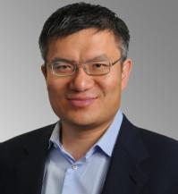
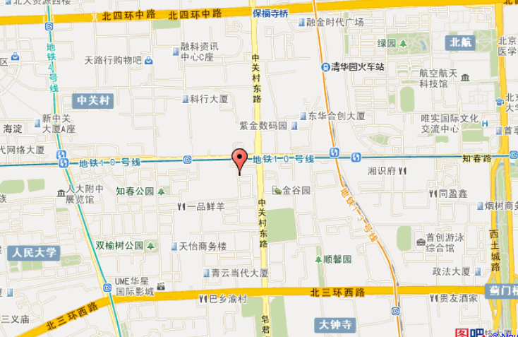

大会介绍
2012cloudstack中国技术大会是由虚拟化云计算和cloudstack创立者美国Citrix(思杰)公司与提供cloudstack完整技术解决方案的迪原创新公司和Creationline公司共同举办。本次大会是首次在中国举办的cloudstack最高级别的技术大会。本大会将聚集云计算行业领军人物和顶级技术专家并带来最权威的豪华技术盛宴。会议期间，与会者不仅可了解到cloudstack在云计算应用领域的前景、发展趋势及未来规划，还可以和来自美国硅谷的cloudstack奠基人梁胜博士深度交流开源云计算最新技术、cloudstack完整体系结构和未来发展方向、其部署应用过程以及包括电信等在内的行业IaaS管理和部署的最佳实践和案例分享。
对cloudstack钟情的企业CIO、CTO、IT经理、IT管理者，以及云计算开发和爱好人员、cloudstack开发人员和充满活力的供应商与开发商将齐聚一堂，共同加速创新和提升cloudstack影响力，实现技术的互操作和标准化，充分展现cloudstack作为事实上和真正的云计算平台行业标准，也必将推动开放云计算平台在中国企业中的应用和发展。
机不可失， 请立即联系我们，一起和风云全球的云计算顶尖大师梁胜博士面对面来感受云计算平台 — cloudstack在开源和商用领域的无穷魅力吧！
大会亮点
- 美国硅谷云计算领军人物、cloudstack奠基人、cloud.com创始人、美国Citrix首位华人CTO—梁胜(Dr. Sheng Liang)博士 ——亲临现场并发表重要技术演讲
- cloudstack首次在中国举办的最高级别、最权威的盛大技术会议
- cloudstack来自全球的顶级专家、企业CIO、CTO、IT经理、IT管理者，以及云计算和cloudstack爱好者和开发人员齐聚一堂
- 来自应用cloudstack获得成功IT变革的行业客户的切身经验分享 – 中国电信等
- cloudstack是目前全球最成功的云架构管理平台，是真正的云架构(IaaS)标准
- cloudstack凭借其良好的用户体验、简单易用性及高成熟度赢得了全球型企业用户的一致认可
日程安排
| 城市： | 中国北京 | 会议地点： | 北京翠宫饭店 二层 多功能厅 |
| 日期： | 2012年11月8日 星期四 | 时间： | 12:30 – 18:30 |
| 大会主旨： | 全面系统的介绍cloudstack的最新技术及应用，含发展历史、演变过程、体系结构、部署实施及最佳实践分享；深化和推进开源云计算在中国的发展。 | ||
| 目标参会人： | CIOs， CTOs, IT管理者, 开源云计算开发人员， cloudstack 开发人员 和SI | ||
| 语言： | 中/英文双语 | ||
| 12:30-13:30 | 嘉宾和参会者签到 | ||
| 13:30-13:40 | 开幕致辞 石武太 先生， CEO， 迪原创新（北京）科技有限公司 |
||
| 13:40-14:40 | 主题演讲: 开源云计算 梁胜博士，CTO，美国Citrix公司；cloud.com 创始人; cloudstack 奠基人 |
||
| 14:40-15:30 | 让管理云计算变得更简单 – 从思杰视角看 cloudstack 秦小康 先生， 云计算平台总监， Citrix大中国区 |
||
| 15:30-15:40 | 茶歇 | ||
| 15:40-16:20 | cloudstack介绍：体系结构，部署和管理 堀田直孝 先生， 资深云计算咨询顾问， Creationline Inc. |
||
| 16:20-17:00 | 虚拟化和cloudstack 在企业中的应用部署实践 刘相均 先生，资深云计算咨询顾问，迪原创新（北京）科技有限公司 |
||
| 17:00-17:40 | cloudstack应用部署案例研究与分享 – 中国电信 杨经纬 先生，资深技术专家，中国电信 |
||
| 17:40-18:00 | 结束 (Q & A) | ||
| 18:00-18:30 | 会后交流时间 | ||
演讲嘉宾
| 梁胜 Sheng Liang  |
梁胜博士现任美国Citrix System Inc.公司云平台首席技术官，是Citrix公司首位华人CTO。梁博士是位标准的技术梦想家；他亦是一位具有开拓精神的优秀的创业者和企业家。 在加入Citrix公司之前，梁胜创立了cloud.com公司并担任首席执行官，直至2011年7月被Citrix以1.6亿美金购入旗下。在此之前他作为Sun Microsystems公司核心技术人员，先后参与设计和开发了JVM (Java 虚拟机) 。在Sun公司之前，他作为创始人之一，创立了Teros网络安全公司，该公司之后被Citrix公司并购。梁先生早年还担任过SEVEN网络公司的工程副总裁，以及Openwave System技术总监。 梁胜毕业于中国科技大学少年班，并拥有耶鲁大学计算机博士学位。 |
|
Dr.Liang is the first Chinese-American CTO at Citrix Systems. He is a technology visionary, and an entrepreneur with pioneering spirit. Prior to joining Citrix he was the CEO and founder of Cloud.com until its acquisition by Citrix in July 2011. During he worked in Sun Microsystems, as the core technical staff, Sheng led team to successfully develop the Java Virtual Machine. Sheng co-founded Teros (acquired by Citrix), an internet security company. He also served as vice president of engineering at SEVEN Networks, and as director of software engineering at Openwave Systems. Dr.Liang received his Ph.D. from Yale University in Computer Science. He graduated from University of Science and Technology of China, special class for gifted juvenile. |
|
| 演讲主题：开源云计算 (Open Source Cloud Computing) | |
|
会议地点和线路图： 北京翠宫饭店 二层 多功能厅
地址： 北京市海淀区知春路76号
地铁路线：地铁10号线知春里站D出口出，向东步行300米即到，酒店在马路南侧；
地铁13号线知春里站B出口出，向西步行500米即到，酒店在马路南侧。
自驾车路线：北四环保福寺桥下向南转，直行1公里，酒店在马路西南角;
公交路线：乘坐323，运通109，689，626，611，944，384，386，630，653，671路车，知春里站下，向东步行300米即到，酒店在马路南侧。
